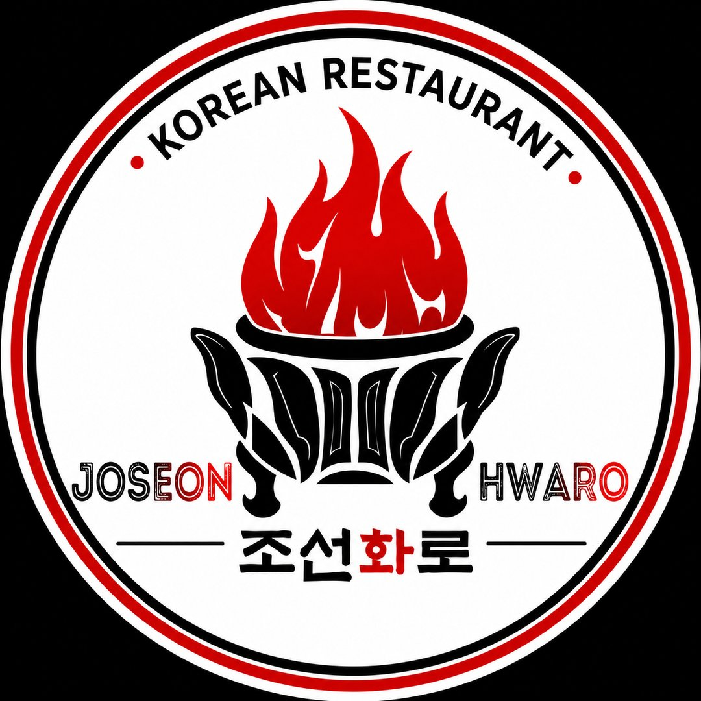
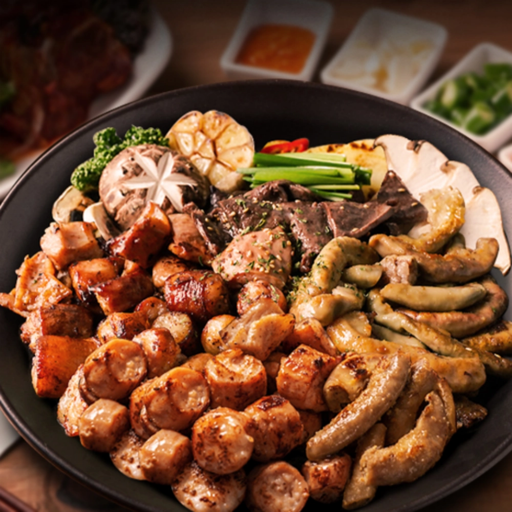
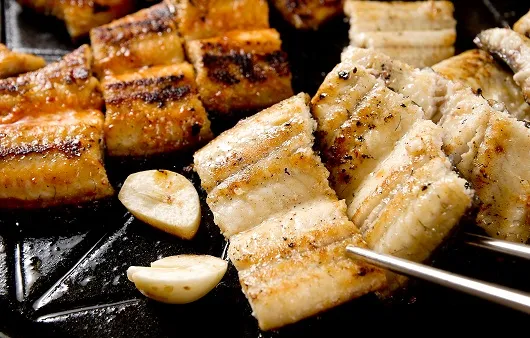
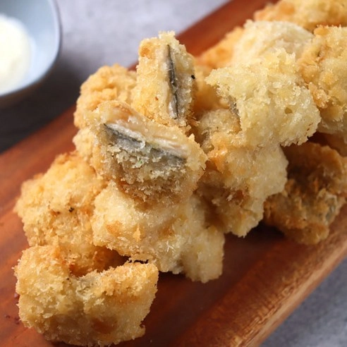
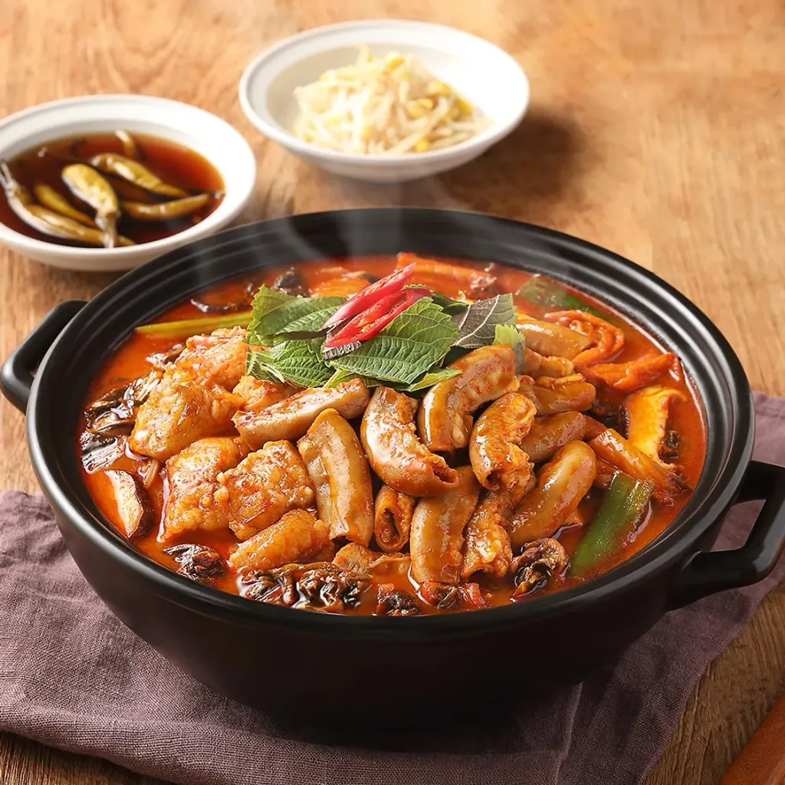
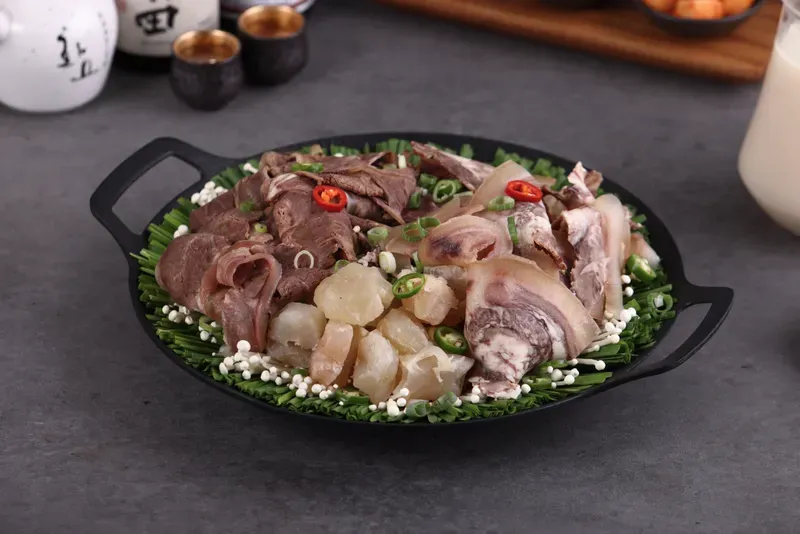
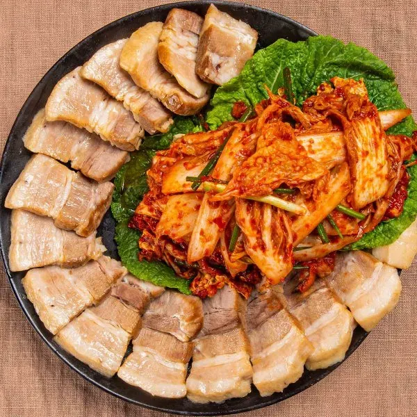
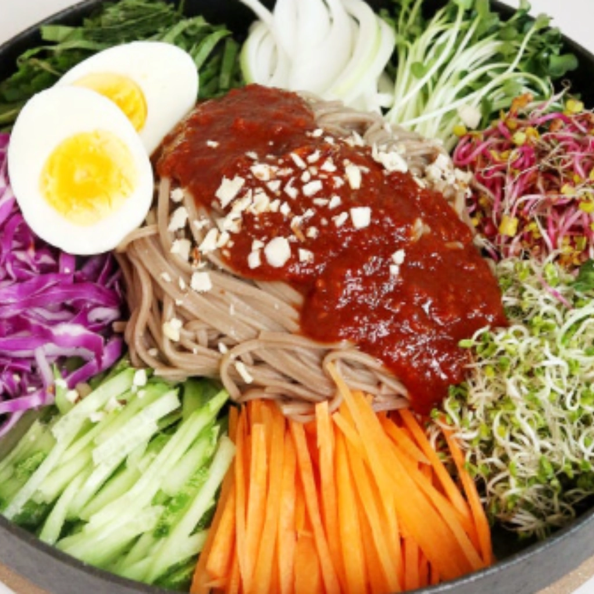
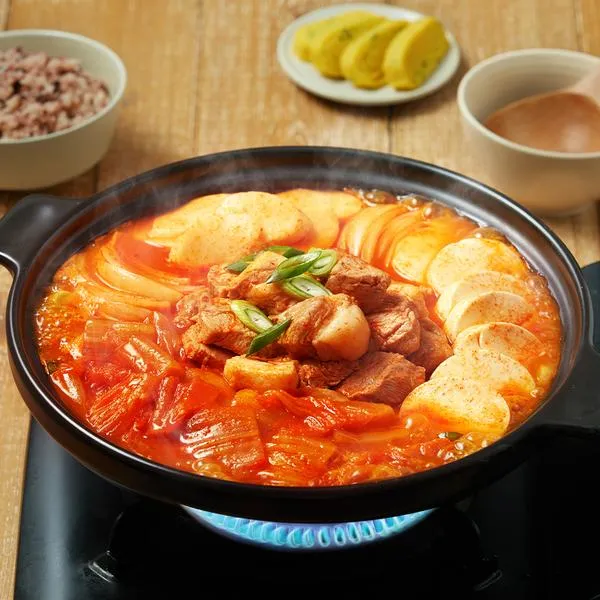

A-1
삼창 화로 세트 (대창, 곱창, 막창)
Set Hwaro 3 Jeroan Sapi (Usus Besar, Usus Kecil, Abomasum)
IDR 850,000
JOSEON HWARO · 조선화로
Choose your language
Pilih bahasa Anda · 请选择语言
조선화로 · KOREAN BBQ
Pilih hidangan favorit Anda.
Silakan pesan melalui staf kami.


Anago Panggang (Garam / Bumbu) – 2 Ekor
IDR 350,000
Anago Goreng
IDR 180,000
Hot Pot Usus Sapi
IDR 400,000
Boiled Beef Assortment
IDR 600,000
Urat Sapi Rebus
IDR 700,000
Daging Bebek / Babi Rebus ala Korea
IDR 290,000
Makguksu Dingin Pedas
IDR 250,000
Hot Pot Kimchi dengan Daging Babi (M/L)
IDR 280,000 / 350,000